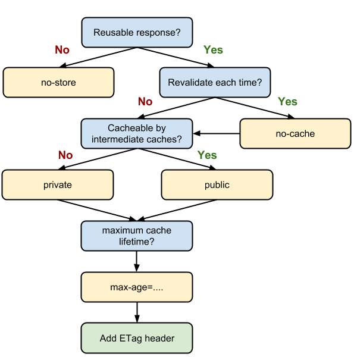

Cache ou pas cache
Le cache 2.0
Par Florent FREMONT
Sommaire
- Verbes HTTP
- La vie sans cache
- Please, pas de cache !
- Le cache mais quand ?
- Cache par expiration
- Cache par validation
- Cache mixte
- Références
Verbes HTTP

La vie sans cache
- C'est quoi ?
- IE 10 : en cache
- Chrome & Firefox : sans cache
- Conclusion
La vie sans cache
C'est quoi ?
Ne pas gérer d'entêtes liées aux caches.
La vie sans cache
Sous IE 10 -> en cache !
La réponse HTTP est automatiquement mise en cache malgré l'absence d'entête de cache

La vie sans cache
Chrome & Firefox : sans cache
La réponse HTTP n'est pas mise en cache
La vie sans cache
Conclusion
Il faut définir explicitement le cache car par défaut on a un comportement différent en fonction des navigateurs.
Please, pas de cache !
Je ne veux pas de cache pour ma réponse HTTP
- Old school : HTTP 1.0
- HTTP 1.1
- En pratique
- En résumé
Please, pas de cache !
Old school : HTTP 1.0
- Entête de la requête
- Pragma : no-cache
- Entête de la réponse
- Pragma : no-cache
- Expires : 0
Il est intéressant de noter que « Expire: 0 »et« Pragma: no-cache "sont têtes de réponse techniquement invalides
Please, pas de cache !
HTTP 1.1
Cache-control : no-cache
‘no-cache’ indique que la réponse renvoyée ne peut pas être utilisée pour satisfaire une requête ultérieure à la même URL sans avoir au préalable vérifié auprès du serveur si la réponse a changé. En conséquence, si un jeton de validation adapté (ETag) est présent, l’élément no-cache induit un aller-retour pour valider la réponse mise en cache, mais peut éliminer le téléchargement si la ressource n’a pas changé.
Please, pas de cache !
HTTP 1.1
Cache-control : no-store
‘no-store’ est beaucoup plus simple, puisqu’il interdit au navigateur et à tout cache intermédiaire de stocker toute version de la réponse renvoyée. C’est la cas par exemple des réponses qui contiennent des données confidentielles, personnelles ou bancaires. Chaque fois que l’utilisateur demande cet élément, une requête est envoyée au serveur et une réponse complète est téléchargée.
Please, pas de cache !
HTTP 1.1
- Cache-control
- no-store
- no-cache : merci IE
La directive "no-store" n'est pas suffisante sur IE pour désactiver le cache.
Please, pas de cache !
HTTP 1.1
Navigateurs
- Chrome & Firefox : 200 Ok
- IE 10 : 200 Ok

Please, pas de cache !
En pratique
@GET
@Path("disablecache")
public Response disablecache(){
javax.ws.rs.core.CacheControl cache = new javax.ws.rs.core.CacheControl();
cache.setNoCache(true); // pour IE
cache.setNoStore(true); // HTTP 1.1 demande juste no-store
return Response.ok("Pas de cache").cacheControl(cache).build();
}
Please, pas de cache !
En résumé
| Entêtes | A utiliser |
|---|---|
| Pragma: no-cache | X |
| Expires: 0 | X |
| Cache-control: no-cache | X |
| Cache-control: no-store | X |
| Cache-control: must-revalidate | _ |
| Cache-control: max-age | _ |
Le cache mais quand ?
- Un petit schéma
- public ou private
Le cache mais quand ?
Le cache mais quand ?
public ou private
Si la réponse est marquée comme étant publique, elle peut être mise en cache, même si elle est associée à une authentification HTTP, et même si le code d’état de la réponse ne peut normalement pas être mis en cache. La plupart du temps l’élément public n’est pas nécessaire, car les informations de mises en cache explicites, telles que max-age, indiquent que la réponse peut quand même être mise en cache.
Le cache mais quand ?
public ou private
Les réponses portant l’élément private peuvent être mises en cache par le navigateur, mais concernent généralement un seul utilisateur, et ne peuvent donc pas être mises en cache par un cache intermédiaire. Par exemple, une page HTML contenant des informations confidentielles sur l’utilisateur peut être mise en cache par le navigateur de cet utilisateur, mais pas par un CDN.
Cache par expiration
- Cache-control & max-age
- En pratique
Cache par expiration
max-age ?
Cette directive indique la durée maximale en secondes pendant laquelle la réponse récupérée peut être réutilisée, à partir de l’envoi de la requête. Par exemple, max-age=60 indique que la réponse peut être mise en cache et réutilisée pendant les 60 secondes qui suivent.
Cache par expiration
En pratique
@GET
@Path("use60sec")
public Response use1sec() {
javax.ws.rs.core.CacheControl cache = new javax.ws.rs.core.CacheControl();
cache.setMaxAge(60);
cache.setPrivate(false);
return Response.ok("En cache pendant 60 sec").cacheControl(cache).build();
}
Cache par expiration
Comportement homogène ?
Oui, la ressource est mise en cache pendant 60 sec. puis le serveur est resollicité (Chrome, FF, IE) pour une remise en cache (après X sec).
Cache par expiration
Cache-control / Expires
Que se passe-t-il si on a du "Cache-control" et du "Expires" ?
Cache par expiration
Cache-control > Expires
// En HTTP 1.1, cache-control prime sur expires
@GET
@Path("mix10sec")
public Response mix10sec(){
Date expires = Date.from(Instant.now().plus(60, ChronoUnit.SECONDS));
CacheControl cache = new CacheControl();
cache.setMaxAge(10);
// l'inverse est vrai aussi
return Response.ok("En cache pendant 10sec").cacheControl(cache).expires(expires).build();
}
Cache par validation
- Basé sur le temps
- Basé sur le contenu
Cache par validation
Basé sur le temps
Sur le papier
L'idée est de mettre en cache une ressource un certain temps tout en vérifiant qu'elle n'a pas été modifiée.
- Request HTTP
- If-Modified-Since
- Réponse HTTP
- Cache-control : max-age=XXX
- Last-Modified
Cache par validation
Basé sur le temps
// ressource mise en cache 10sec puis une revalidation est nécessaire
@GET
@Path("validationtps")
public Response validationTps(@Context HttpServletRequest httpRequest) {
javax.ws.rs.core.CacheControl cache = new javax.ws.rs.core.CacheControl();
cache.setMaxAge(10);
cache.setMustRevalidate(true);
cache.setPrivate(false);
Instant updated = Instant.parse("2011-12-03T10:15:30Z");
Response.ResponseBuilder builder = request.evaluatePreconditions(Date.from(updated));
if(builder == null){
builder = Response.ok("Ma petite donnée").lastModified(Date.from(updated));
}
builder.cacheControl(cache);
return builder.build();
}
Cache par validation
Basé sur le temps
Must-revalidate
must-revalidate indique aux caches de devoir obéir à toute information de fraîcheur que vous leur donnez à propos d'une représentation. HTTP permet aux caches de servir des représentations périmées sous certaines conditions ; en indiquant cette en-tête, vous dites au cache que vous voulez un respect strict de vos règles.

Cache par validation
Basé sur le temps
Comportement homogène ?
Oui...
- Chrome & FF & IE :
- Mise en cache pendant 10sec puis revalidation
- Serveur tranquille pendant 10sec
Cache par validation
Basé sur le temps
+ / -
- Avantages
- Pendant X sec le serveur n'est pas sollicité
-
Inconvénients
- Si ma ressource est périmée pendant les X sec : je suis fichu
- Gestion du cache par validation (basé sur le temps) homogène
Cache par validation
Basé sur le temps
| Entête | A utiliser |
|---|---|
| Cache-control : max-age | X |
| Last-Modified | X |
| Cache-control : must-revalidate | X |
| Cache-control : no-cache | |
| Cache-control : no-store |
Cache par validation
Basé sur le contenu
Utilisation de l'entête "ETag" est similaire à "Last-Modified" excepté que la valeur est un "hash du contenu".
Très utile lorsque la dernière date de modification est difficile à prévoir.

Cache par validation
Basé sur le contenu
@GET
@Path("vcontenu")
public Response vcontenu(@Context HttpServletRequest httpRequest) {
String hashOfMyContent = "azerty_v1";
EntityTag etag = new EntityTag(hashOfMyContent);
Response.ResponseBuilder builder = request.evaluatePreconditions(etag);
if(builder == null){
builder = Response.ok("Cache par validation de contenu");
}
builder.tag(etag);
return builder.build();
}
Cache par validation
Basé sur le contenu
On met en production...
Cache par validation
Basé sur le contenu
La désillution
Et quelques temps plus tard, on se rend compte que le cache "plante" sur IE...

Cache par validation
Basé sur le contenu
Quel menteur IE !
INFO (CacheControlService.java:125) - Retour du contenu
INFO (CacheControlService.java:129) - Retour 304Cache par validation
Basé sur le contenu
Vive "no-cache"
@GET
@Path("vcontenu_ie")
public Response vcontenuIe(@Context HttpServletRequest httpRequest) {
String hashOfMyContent = "azerty_v1";
EntityTag etag = new EntityTag(hashOfMyContent);
CacheControl cache = new CacheControl();
cache.setNoCache(true);
Response.ResponseBuilder builder = request.evaluatePreconditions(etag);
if(builder == null){
builder = Response.ok("Cache par validation de contenu").cacheControl(cache).tag(etag);
}
return builder.build();
}
Cache par validation
Basé sur le contenu
Vive "no-cache"
INFO (CacheControlService.java:125) - Retour du contenu
INFO (CacheControlService.java:129) - Retour 304
INFO (CacheControlService.java:129) - Retour 304
INFO (CacheControlService.java:129) - Retour 304
INFO (CacheControlService.java:129) - Retour 304
INFO (CacheControlService.java:129) - Retour 304Cache par validation
Basé sur le contenu
no-cache Vs must-revalidate
- must-revalidate Il signifie «à l'expiration du cache, je refuse de retourner des réponses périmées à l'utilisateur, même si elle est acceptable".
- no-cache no-cache implique must-revlidate plus le fait la réponse devient vicié tout de suite.
Si une réponse est mis en cache pendant 10 secondes, alors must-revalidate impose une revalidation après 10 secondes, alors que no-cache après 0 secondes.
Cache par validation
Basé sur le contenu
| Entête | A utiliser |
|---|---|
| ETag | X |
| Cache-control : no-cache | X |
| Cache-control : max-age | |
| Cache-control : must-revalidate | |
| Cache-control : no-store |
Cache mixte
ETag & max-age
Cache par validation (ETag), avec mise en cache pendant 10sec strictement.
Chrome, FF, IE : OK
@GET
@Path("vcontenu10sec")
public Response vcontenu10sec() {
String hashOfMyContent = "azerty_v1";
EntityTag etag = new EntityTag(hashOfMyContent);
CacheControl cache = new CacheControl();
cache.setMaxAge(10);
cache.setMustRevalidate(true);
Response.ResponseBuilder builder = request.evaluatePreconditions(etag);
if(builder == null){
builder = Response.ok("Cache par validation de contenu");
}
builder.cacheControl(cache).tag(etag);
return builder.build();
}